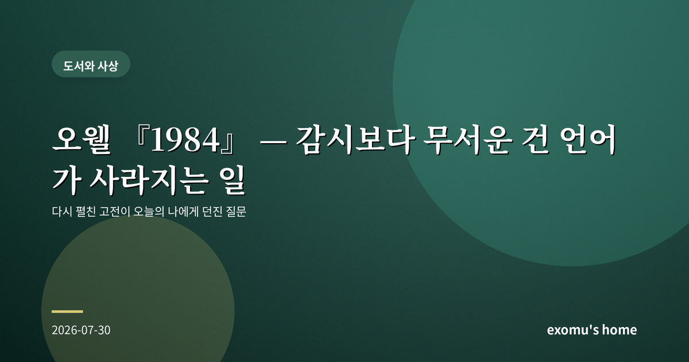
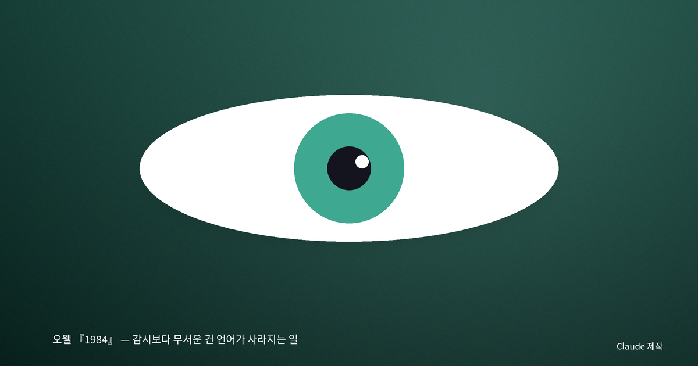
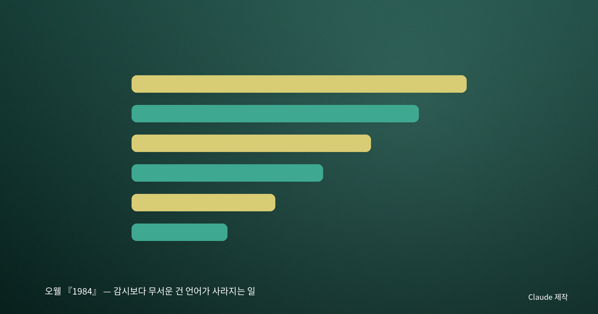
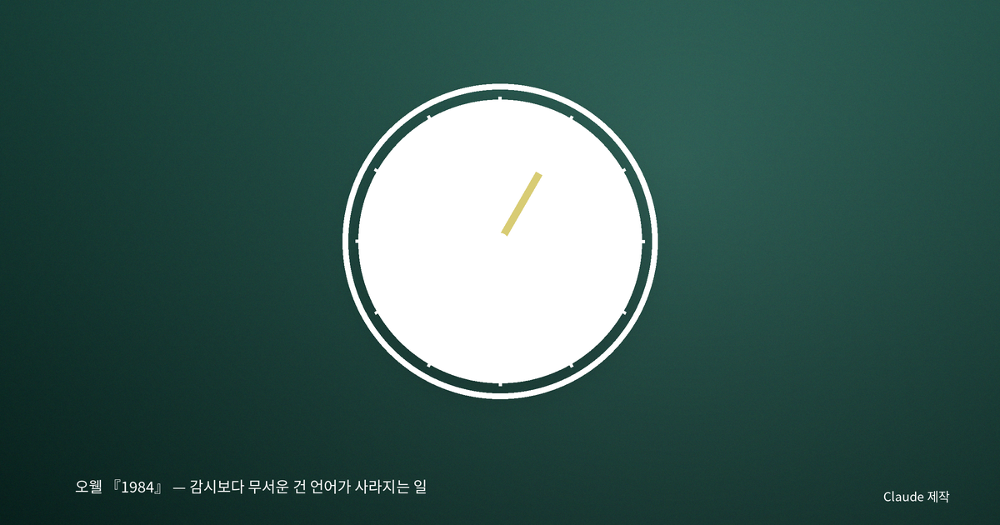
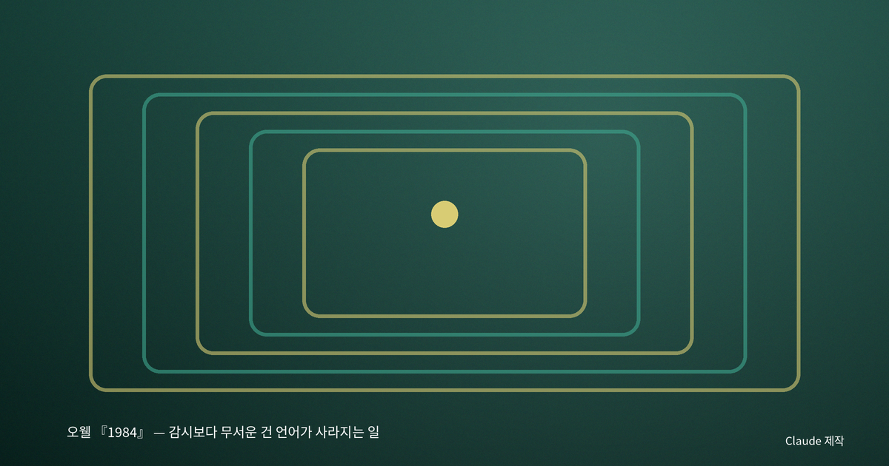

오웰 『1984』 — 감시보다 무서운 건 언어가 사라지는 일

다시 펼친 『1984』
오래전 학창 시절에 읽었던 『1984』를 최근 다시 펼쳤다. 십 대의 나는 이 소설을 '무서운 감시 사회 이야기'로 기억했다. 어디에나 있는 텔레스크린, 모든 것을 보는 빅 브라더. 그런데 어른이 되어 다시 읽으니, 정작 나를 서늘하게 만든 것은 감시 장치가 아니었다. 그것은 '신어(Newspeak)'라는, 언어를 해마다 줄여 나가는 국가의 계획이었다.

단어를 없애면 생각도 없앨 수 있다
소설 속 전체주의 국가는 매년 사전을 더 얇게 만든다. 새 단어를 만드는 게 아니라 있는 단어를 없앤다. '자유'라는 말이 사라지면 자유를 떠올릴 방법도 사라진다는 것이 그들의 계산이다. 한 등장인물은 언젠가 반란을 꿈꾸는 일 자체가 불가능해질 것이라고 말한다. 그것을 표현할 단어가 남아 있지 않을 테니까. 나는 이 대목에서 책을 덮고 한참을 생각했다.
우리는 흔히 생각이 먼저 있고 말이 그것을 담는다고 여긴다. 그러나 이 소설은 반대의 가능성을 경고한다. 쓸 수 있는 말이 줄어들면 할 수 있는 생각도 줄어든다는 것이다. 언어는 생각을 담는 그릇일 뿐 아니라, 생각이 자라나는 토양이기도 하다. 토양을 좁히면 그 위에 자랄 수 있는 것도 함께 줄어든다.

진실이 매일 고쳐 쓰이는 곳
주인공의 직업은 과거의 신문 기사를 고쳐 쓰는 일이다. 어제의 예측이 틀리면 기록을 바꿔 애초에 맞았던 것으로 만든다. 과거가 매일 새로 쓰이는 세계에서는 무엇이 진짜 일어났는지 아무도 확신할 수 없다. 나는 여기서 기억과 자유가 얼마나 깊이 이어져 있는지를 깨달았다. 스스로 겪은 일을 스스로 기억할 수 있을 때에만, 우리는 권력이 들려주는 이야기에 저항할 수 있다.
20세기의 한 정치철학자는 전체주의의 무서움이 사람들에게 거짓을 믿게 만드는 데 있지 않고, 참과 거짓을 구별하려는 마음 자체를 지치게 만드는 데 있다고 보았다. 모든 것이 조작될 수 있다고 믿게 되면 사람들은 판단을 포기한다. 판단을 포기한 자리에 권력이 들어선다.

오늘의 신어를 생각한다
이 소설이 오늘의 나에게 두려운 이유는, 그것이 먼 미래의 이야기처럼 읽히지 않기 때문이다. 우리는 감시 카메라 대신 스스로 위치를 공유하고, 강요가 아니라 편리함 때문에 기록을 넘겨준다. 복잡한 논의가 짧은 구호와 밈으로 납작해질 때, 나는 문득 신어를 떠올린다. 단어가 줄어드는 것이 아니라, 단어를 오래 붙들고 곱씹는 힘이 줄어드는 것은 아닌가 하고.

언어를 지킨다는 것
그래서 나는 이 책을 덮으며, 자유를 지키는 일이 거창한 저항이 아니라 사소한 습관에서 시작될 수 있다고 생각하게 됐다. 정확한 단어를 고르려 애쓰는 것, 모호한 말 대신 자기 생각을 또박또박 적어 보는 것, 남이 정리해 준 결론을 그대로 삼키지 않고 스스로 문장을 만들어 보는 것. 언어를 풍부하게 붙드는 일은 곧 생각할 자유를 붙드는 일이다. 『1984』는 그 자유가 얼마나 조용히, 그리고 얼마나 쉽게 사라질 수 있는지를 오래도록 일깨운다.